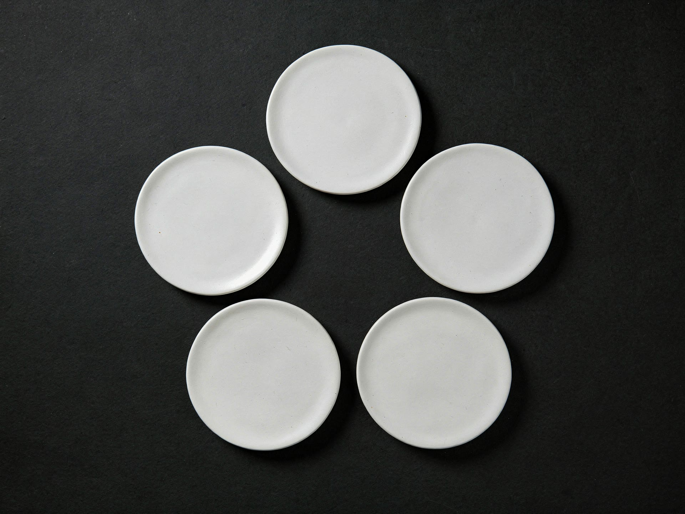
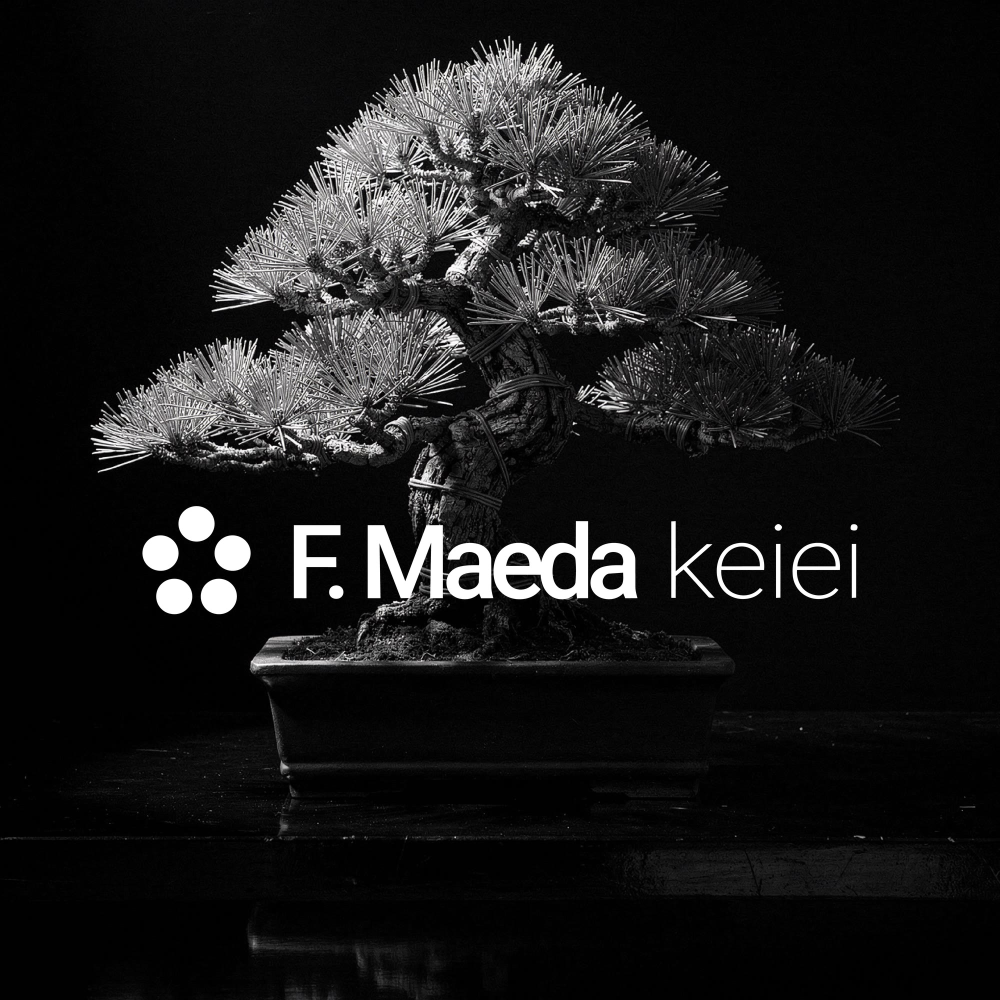
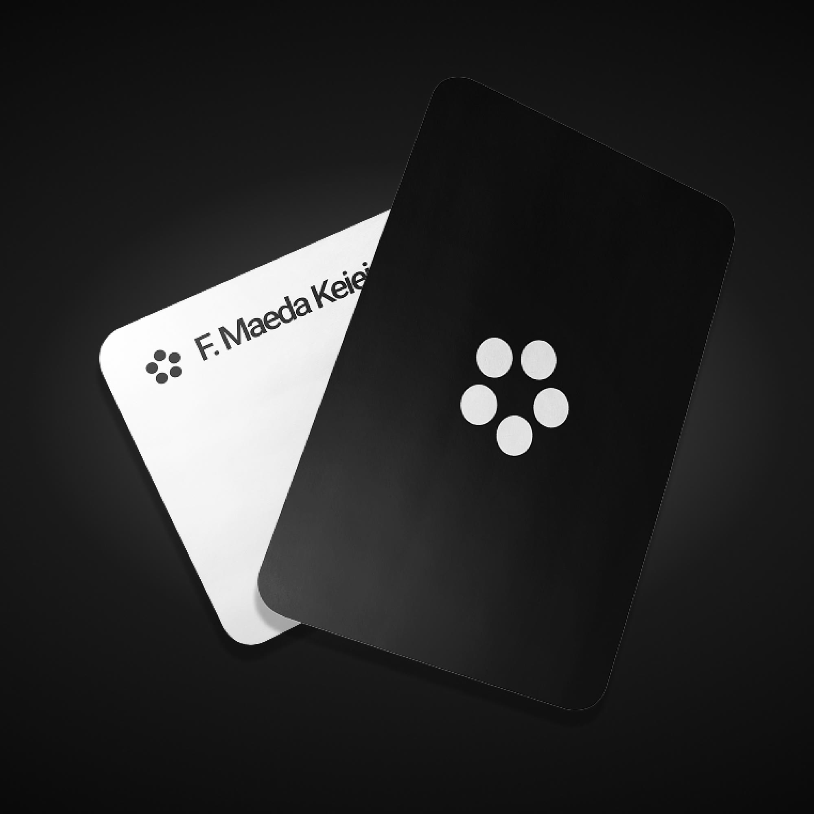
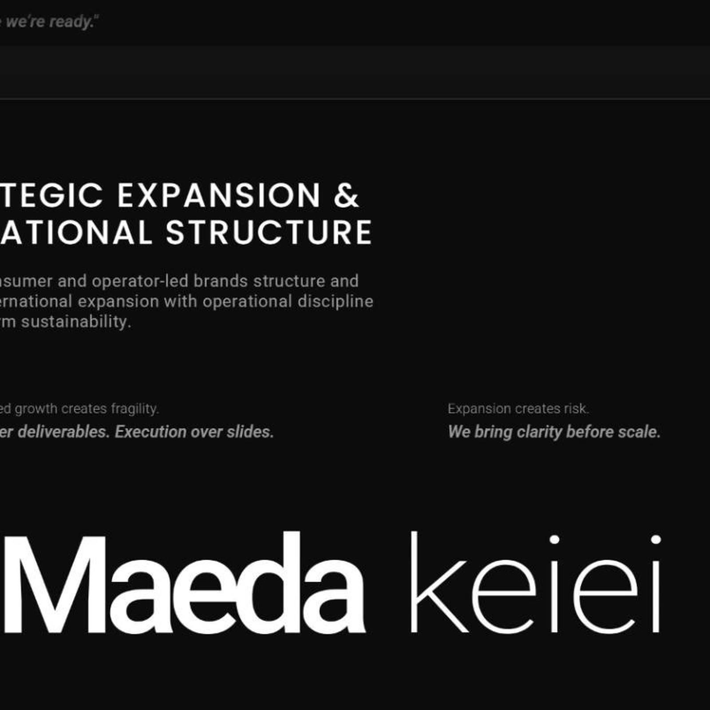
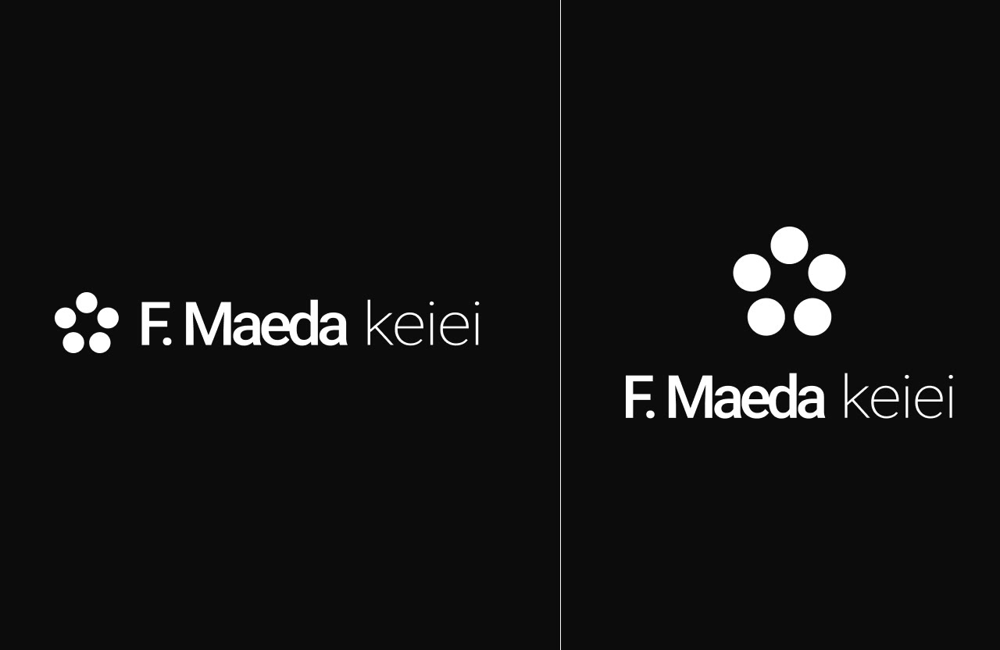

<f. maeda keiei>
> brand identity & website for a cross-border expansion consultancy
fmaeda.co ↗<01 problem>
> expansion rarely fails from lack of ambition — it fails from bad structure. f. maeda keiei steps in before a consumer brand crosses a border: diagnosis, entry model, operational structure. the identity had to perform that discipline, not describe it.
<02 concept>
> the mark is drawn from the maeda clan kamon: five rings around a centre. it represents discipline, reliability, purpose and the connection between separate operating systems forming the bigger structure.


<03 construction>
5 × same radius ; 1 + 2 + 2 ; linked centres
<04 typography>
> inter, two weights. "f. maeda" in bold carries the name; "keiei" — management, in raw japanese — in light carries the practice. the client asked for simplicity and sobriety: one familiar typeface, and the contrast of weight does the rest.
Aa
F. Maeda keiei
inter ; bold + light ; chosen for sobriety — the client asked for simplicity<05 colour>
> pure black and pure white. no greys, no tints — a binary palette for a firm that sells clear decisions.
#0A0A0A ; pure black
#FFFFFF ; pure white
> no greys, no tints, no colour.
<06 rules>
> horizontal lockup for the site and documents; the symbol stands alone at small sizes — favicon, app icon, blind deboss. the five circles are never redrawn, recoloured or rearranged.
min. 16px
<07 applications>
> a one-page site built around a bonsai — growth that is organic, structured and constant. business cards in black and white, a blind deboss, and five stones raked into a karesansui.





<08 motion>
> the kamon comes apart and the five circles settle into the pentagon — the mark building itself, the way the firm builds structure.